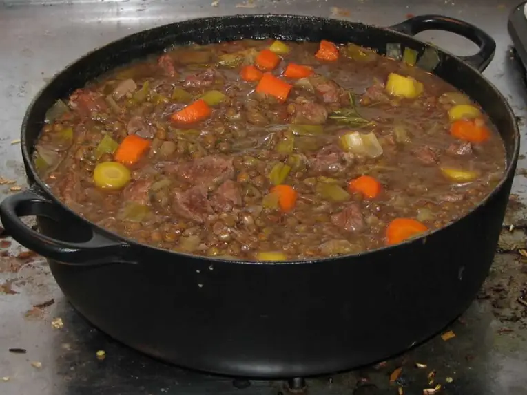

Фото: FiveRings (talk), CC BY 3.0

Чечевичная похлёбка с бараниной
Густой суп из красной чечевицы на бараньем бульоне с зирой и томатом
120 мин6 порц.336 ккал на порциюБ 23 · Ж 14 · У 28Средиземноморская кухня
Продукты на 6 порц.
- Баранина500 г
- Вода2000 мл
- Чечевица красная1 стак.
- Картофель2 шт
- Лук репчатый2 шт
- Морковь1 шт
- Томатная паста1 ст. л.
- Чеснок2 зуб.
- Зира1 ч. л.
- Соль2 ч. л.
- Перец чёрный молотыйпо вкусу
- Кинза по желанию0,5 пучок
- Лимон по желанию4 долька
Как готовить
- Баранину нарежьте кусками по 3-4 см, залейте холодной водой и доведите до кипения. Снимите пену и варите на слабом огне 1 час, пока мясо не станет мягким.
- Чечевицу промойте до прозрачной воды.
- Добавьте в бульон чечевицу, картофель кубиками, мелко нарезанный лук и тёртую морковь. Варите 20 минут, пока чечевица не разварится.
- Разведите томатную пасту половником бульона и влейте в суп, добавьте растёртую в пальцах зиру, соль и перец.
- Варите ещё 5 минут. Чечевица должна полностью развариться и сделать суп густым.
- Добавьте выдавленный чеснок, снимите с огня и посыпьте кинзой. Подавайте с долькой лимона.
Совет. Для сытного ифтара суп хорош первым горячим блюдом после фиников: он мягкий и не перегружает желудок. Баранину берите с косточкой, бульон будет наваристее.